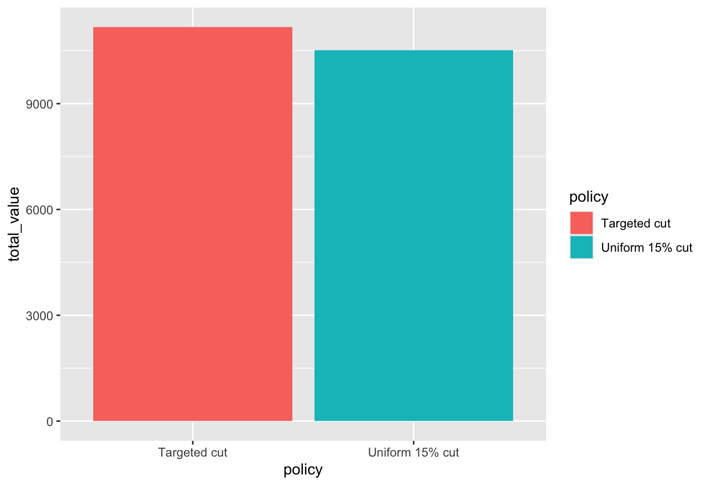
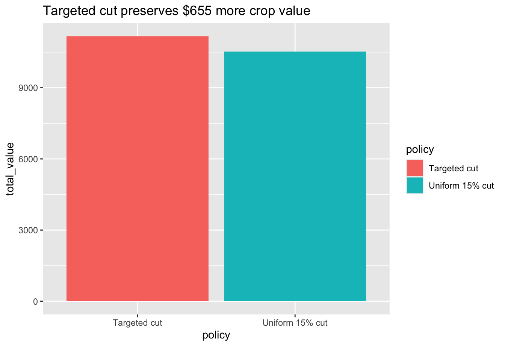
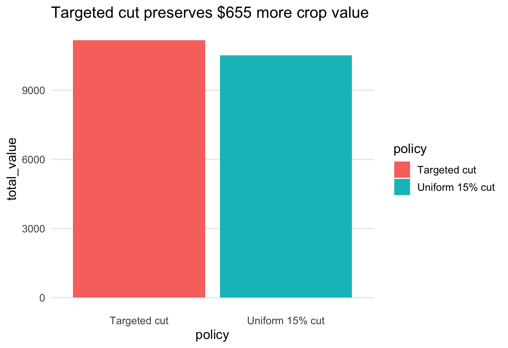
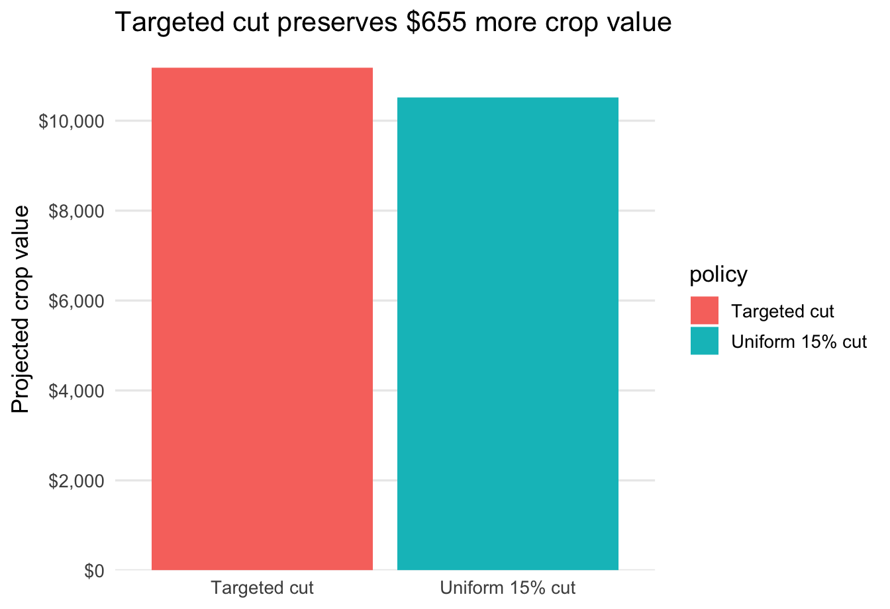
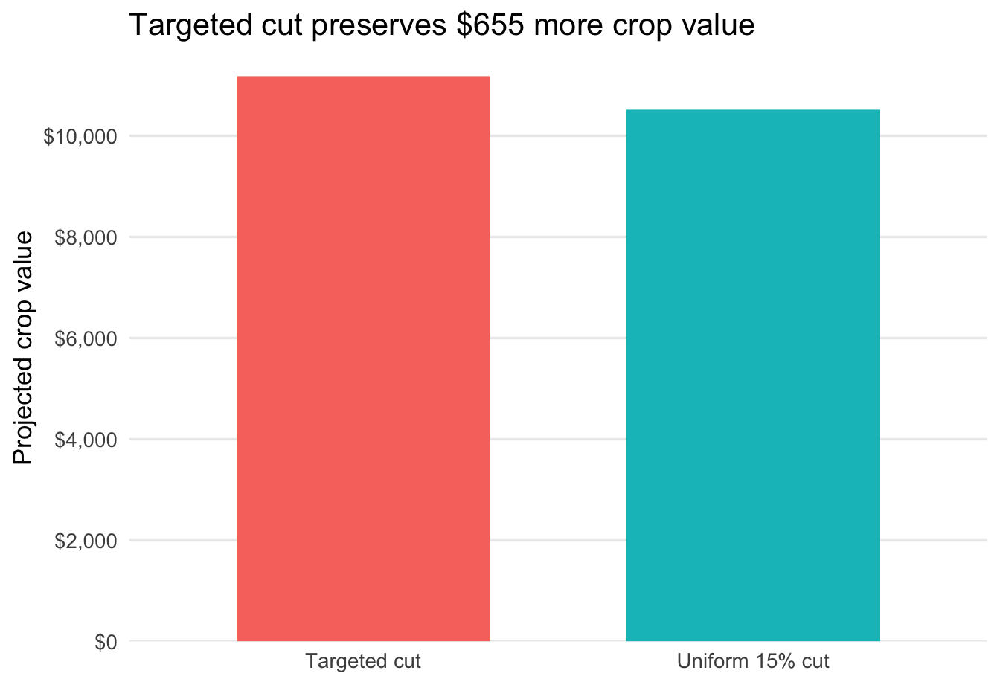
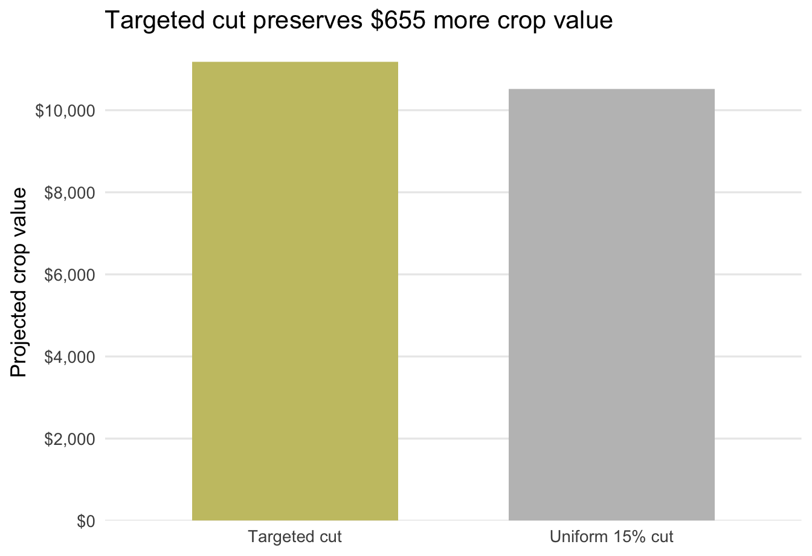
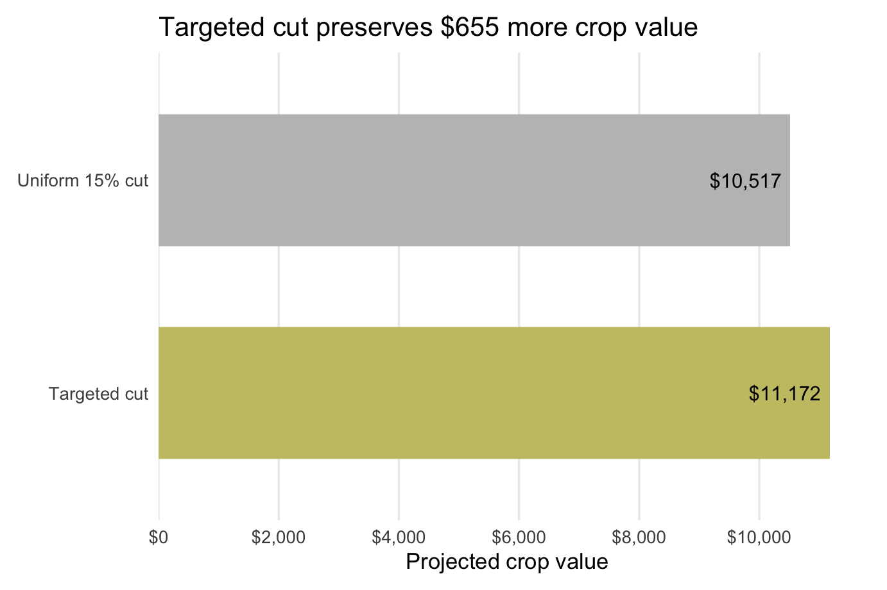
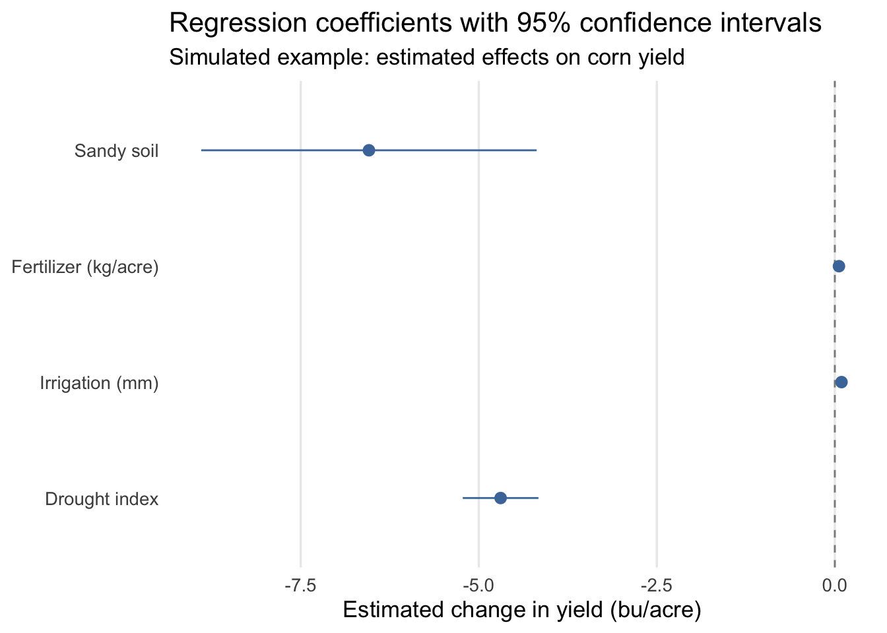
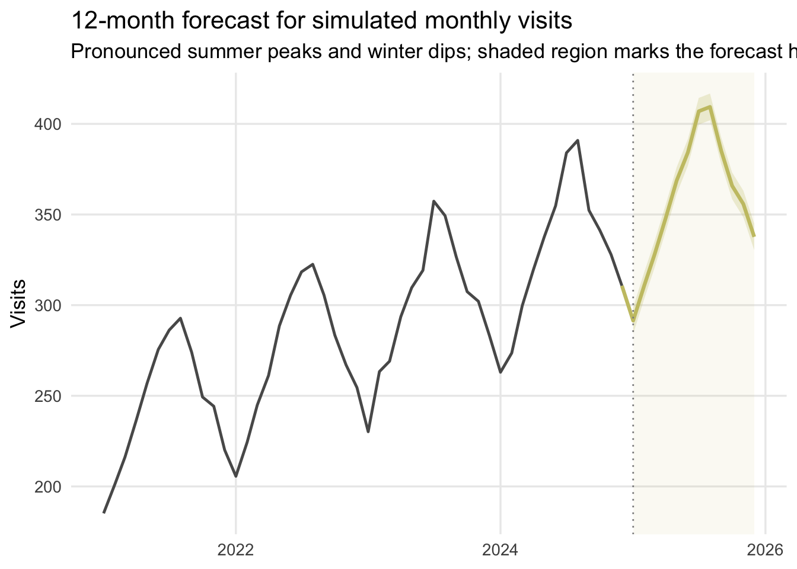

library(tidyverse)Week 14 Lab: Refining Data Visuals

This lab is about refining a chart after you already have a first draft. In Part 1, you will revisit the Week 12 water-cut example and improve one chart step by step. In Part 2, you will apply the same workflow to one graph from your project.
Preliminaries
- Create a folder called
lab_14and navigate there in RStudio or VS Code. - Create a new R script called
lab_14.Rin yourlab_14folder. - Write a brief comment at the top describing the purpose of the script.
- Load the required library at the top of your script:
Lab Notebook
Open a word processing document (Google Doc, Word, or plain text) to serve as your lab notebook. Use it to respond to the questions in this lab.
Part 1: Guided Chart Refinement Demo
In Week 12, you worked with a water-allocation scenario for an irrigation district deciding how to handle a 15% water cut. Here we will reuse that same example, but the goal is different. Instead of choosing a chart type, we will practice refining a chart so the message becomes easier to see.
To keep the exercise simple, we will use the same week 12 value measure: yield_bu_acre * price. That gives a comparable farm-level crop value measure, which we can use to compare the two water-cut policies.
Reconstruct the Week 12 analysis
In the week 12 supplement, the idea was:
- calculate a simple farm-level crop value measure
- compare a uniform 15% cut with a targeted cut that keeps water first on farms with higher value per acre-foot
- summarize the projected crop value under each policy
Use the code below to recreate that comparison.
library(tidyverse)
accent <- "#C8C372"
muted <- "gray75"
refine_theme <- theme_minimal(base_size = 13) +
theme(
panel.grid.minor = element_blank(),
plot.title.position = "plot",
plot.background = element_rect(fill = "white", color = NA),
panel.background = element_rect(fill = "white", color = NA)
)
# Reuse the same farm-level dataset from week 12
allocation_dat <- read_csv("https://jbayham.github.io/arec-330/modules/12_choosing/includes/lab12_dat.csv", show_col_types = FALSE)
# Recreate the simple value measure from the week 12 scenario
value_dat <- allocation_dat %>%
mutate(
price_per_bu = case_when(
crop == "corn" ~ 5,
crop == "soybeans" ~ 6,
crop == "alfalfa" ~ 7
),
value_per_acre = yield_bu_acre * price_per_bu,
value_per_acft = value_per_acre / seasonal_water_acft
)
# The board must operate with 15% less total water
water_budget <- sum(value_dat$seasonal_water_acft) * 0.85
# Targeted cut: preserve water first where value per acre-foot is higher
targeted_plan <- value_dat %>%
arrange(desc(value_per_acft)) %>%
mutate(
water_before = lag(cumsum(seasonal_water_acft), default = 0),
water_kept = pmax(0, pmin(seasonal_water_acft, water_budget - water_before)),
share_kept = water_kept / seasonal_water_acft,
projected_value = value_per_acre * share_kept
)
# Compare the two policies
policy_compare <- tibble(
policy = c("Uniform 15% cut", "Targeted cut"),
total_value = c(
sum(value_dat$value_per_acre * 0.85),
sum(targeted_plan$projected_value)
)
) %>%
mutate(
policy_long = c(
"Uniform 15% cut to all farms",
"Targeted cut based on value per acre-foot"
),
policy_short = factor(
c("Uniform cut", "Targeted cut"),
levels = c("Uniform cut", "Targeted cut")
),
emphasis = c("Background", "Highlight"),
label = scales::dollar(total_value, accuracy = 1)
)
value_gap <- policy_compare$total_value[2] - policy_compare$total_value[1]
policy_compare# A tibble: 2 × 6
policy total_value policy_long policy_short emphasis label
<chr> <dbl> <chr> <fct> <chr> <chr>
1 Uniform 15% cut 10517. Uniform 15% cut to al… Uniform cut Backgro… $10,…
2 Targeted cut 11172. Targeted cut based on… Targeted cut Highlig… $11,…
Note
Refinement checklist
- What should the audience notice first?
- What can be removed without losing meaning?
- Which details should be pushed into the background?
- What is the one-sentence takeaway?
Step 0: First draft chart
ggplot(policy_compare, aes(x = policy, y = total_value, fill = policy)) +
geom_col() 
What changed: Nothing yet. This is the default first draft.
Why it helps: It gets the comparison on the page quickly, but it does not yet tell the audience what decision the chart supports or what they should notice first.
Step 1: Clarify the message
ggplot(policy_compare, aes(x = policy, y = total_value, fill = policy)) +
geom_col() +
labs(
title = "Targeted cut preserves $655 more crop value"
)
What changed: I added a takeaway title and a clearer y-axis label.
Why it helps: Before refining the design, it helps to make the message explicit.
Step 2: Remove obvious clutter
ggplot(policy_compare, aes(x = policy, y = total_value, fill = policy)) +
geom_col() +
labs(
title = "Targeted cut preserves $655 more crop value"
) +
theme_minimal(base_size = 13) +
theme(
panel.grid.major.x = element_blank(),
panel.grid.minor = element_blank()
)
What changed: I switched to a cleaner theme and removed unnecessary gridlines.
Why it helps: The background should not compete with the bars. A cleaner theme makes the comparison easier to read.
Step 3: Clean up the axis
ggplot(policy_compare, aes(x = policy, y = total_value, fill = policy)) +
geom_col() +
scale_y_continuous(
breaks = seq(0, 12000, 2000),
labels = scales::label_dollar(),
expand = expansion(mult = c(0, 0.04))
) +
labs(
title = "Targeted cut preserves $655 more crop value",
x = NULL,
y = "Projected crop value"
) +
theme_minimal(base_size = 13) +
theme(
panel.grid.major.x = element_blank(),
panel.grid.minor = element_blank()
)
What changed: I formatted the y-axis in dollars, updated the label and removed the redundant x-axis title.
Why it helps: Clearer axis labels reduce reading time and make the values easier to interpret.
Step 4: Simplify or remove unnecessary legends
ggplot(policy_compare, aes(x = policy, y = total_value, fill = policy)) +
geom_col(width = 0.65, show.legend = FALSE) +
scale_y_continuous(
breaks = seq(0, 12000, 2000),
labels = scales::label_dollar(),
expand = expansion(mult = c(0, 0.04))
) +
labs(
title = "Targeted cut preserves $655 more crop value",
x = NULL,
y = "Projected crop value"
) +
theme_minimal(base_size = 13) +
theme(
panel.grid.major.x = element_blank(),
panel.grid.minor = element_blank()
)
What changed: I removed the legend.
Why it helps: With only two bars and clear category labels on the axis, the legend is redundant and makes the eye travel farther than necessary.
Step 5: Use color or emphasis to direct attention
ggplot(policy_compare, aes(x = policy, y = total_value, fill = emphasis)) +
geom_col(width = 0.65, color = NA, show.legend = FALSE) +
scale_fill_manual(values = c("Background" = muted, "Highlight" = accent)) +
scale_y_continuous(
breaks = seq(0, 12000, 2000),
labels = scales::label_dollar(),
expand = expansion(mult = c(0, 0.04))
) +
labs(
title = "Targeted cut preserves $655 more crop value",
x = NULL,
y = "Projected crop value"
) +
theme_minimal(base_size = 13) +
theme(
panel.grid.major.x = element_blank(),
panel.grid.minor = element_blank()
)
What changed: I muted the uniform cut and used one accent color to highlight the targeted cut.
Why it helps: Color is a preattentive attribute. Using it sparingly tells the audience where to look first.
Step 6: Final refined chart
ggplot(policy_compare, aes(x = policy, y = total_value, fill = emphasis)) +
geom_col(width = 0.62, color = NA, show.legend = FALSE) +
geom_text(aes(label = label), hjust = 1.12, size = 4.1) +
coord_flip() +
scale_fill_manual(values = c("Background" = muted, "Highlight" = accent)) +
scale_y_continuous(
breaks = seq(0, 12000, 2000),
labels = scales::label_dollar(),
expand = expansion(mult = c(0, 0.04))
) +
labs(
title = "Targeted cut preserves $655 more crop value",
x = NULL,
y = "Projected crop value"
) +
theme_minimal(base_size = 13) +
theme(
panel.grid.major.y = element_blank(),
panel.grid.minor = element_blank(),
plot.margin = margin(10, 18, 10, 10)
)
What changed: I added direct labels and a horizontal layout so the audience can read the comparison with less eye movement. The less important bar stays in the background.
Why it helps: The final chart makes the intended takeaway obvious and reduces unnecessary eye movement.
Question 1: After looking across Steps 0-6, which two refinement moves made the biggest difference? Explain in 2-3 sentences what changed and why the final version is easier to read.
Part 2: Refine One Graph for Your Project
Now use the same workflow on one chart from your group project. Hopefully, you have already created some rough-draft charts for your project. If not, create a rough draft first and then apply the same refinement process to make it better. If you do not have data yet, you can create the data you expect to have from your analysis.
Step 1: Choose chart type
Choose a chart type that is appropriate for the message you want to communicate. If you have already done this, then you can skip this step. If not, review week 12 to choose a chart type and create a rough draft.
Step 2: Define the communication goal
Before changing the chart, write down what it is supposed to do.
Question 2: In your lab notebook, answer all four prompts:
- What decision or question does this graph support?
- Who is the audience?
- What should the audience notice first?
- What is the one-sentence takeaway?
Step 3: Diagnose the current graph
Look carefully at your rough draft before you start editing it.
Question 3: Diagnose the current graph by identifying:
- at least two sources of clutter
- one confusing label, axis, legend, or layout issue
- what your eye is drawn to first
- whether that matches the intended message
Step 4: Refine the graph
Implement the refinements you identified in Step 3.
Step 5: Compare before and after
Display your original graph and your revised graph. Printing them one after the other is fine. You can save your plot using ggsave().
Question 4: Write one short paragraph explaining what changed and why. Be specific about how the refinements help the audience notice the intended message more quickly.
Deliverables
You will submit both a log file and a lab notebook.
Submit on Canvas:
Log file (
lab_14.log) Use the sink-source-sink pattern. Your log should include code, output, and brief comments explaining each step.Lab notebook with:
- answers to Questions 1-4
- your original graph
- your refined graph
- a short explanation of the refinements
- your one-sentence takeaway
Appendix: Analysis-Based Visuals
The project for this course requires some analysis using either regression or forecasting. The two examples below show how to build visuals for those analyses and then refine them like any other chart. Both examples use simulated data so you can see the full workflow end to end.
Appendix A: Plot Regression Coefficients
This example simulates farm-level data, estimates a linear regression, and then plots the coefficient estimates with 95% confidence intervals using geom_pointrange().
library(tidyverse)
library(broom)
set.seed(330)
reg_dat <- tibble(
farm_id = 1:250,
drought_index = runif(250, 0, 8),
irrigation_mm = rnorm(250, mean = 320, sd = 45),
fertilizer_kg = rnorm(250, mean = 145, sd = 18),
sandy_soil = rbinom(250, size = 1, prob = 0.35),
yield_bu_acre = 185 -
4.8 * drought_index +
0.09 * irrigation_mm +
0.05 * fertilizer_kg -
7.5 * sandy_soil +
rnorm(250, mean = 0, sd = 9)
)
mod_reg <- lm(
yield_bu_acre ~ drought_index + irrigation_mm + fertilizer_kg + sandy_soil,
data = reg_dat
)
coef_plot_dat <- tidy(mod_reg, conf.int = TRUE) %>%
select(term, estimate, conf.low, conf.high) %>%
filter(term != "(Intercept)") %>%
mutate(
term = factor(
term,
levels = c("drought_index", "irrigation_mm", "fertilizer_kg", "sandy_soil"),
labels = c("Drought index", "Irrigation (mm)", "Fertilizer (kg/acre)", "Sandy soil")
)
)
ggplot(coef_plot_dat, aes(x = term, y = estimate, ymin = conf.low, ymax = conf.high)) +
geom_hline(yintercept = 0, linetype = "dashed", color = "gray55") +
geom_pointrange(color = "#4C78A8", linewidth = 0.5) +
coord_flip() +
labs(
title = "Regression coefficients with 95% confidence intervals",
subtitle = "Simulated example: estimated effects on corn yield",
x = NULL,
y = "Estimated change in yield (bu/acre)"
) +
theme_minimal(base_size = 13) +
theme(
panel.grid.minor = element_blank(),
panel.grid.major.y = element_blank()
)
Appendix B: Plot a Forecast
This example simulates monthly data, fits a simple forecasting model with trend and seasonality, predicts the next 12 months, and then plots the historical series and forecast together.
library(tidyverse)
library(fpp3)
set.seed(330)
forecast_hist <- tibble(
month = seq.Date(from = as.Date("2021-01-01"), by = "month", length.out = 48),
t = 1:48
) %>%
mutate(
month_fac = factor(format(month, "%b"), levels = month.abb),
seasonal_effect = case_when(
month_fac == "Jan" ~ -45,
month_fac == "Feb" ~ -32,
month_fac == "Mar" ~ -12,
month_fac == "Apr" ~ 4,
month_fac == "May" ~ 22,
month_fac == "Jun" ~ 42,
month_fac == "Jul" ~ 58,
month_fac == "Aug" ~ 55,
month_fac == "Sep" ~ 30,
month_fac == "Oct" ~ 10,
month_fac == "Nov" ~ -6,
month_fac == "Dec" ~ -24
),
visits = 220 + 2.4 * t + seasonal_effect + rnorm(n(), mean = 0, sd = 5)
)
forecast_hist_ts <- forecast_hist %>%
mutate(month = yearmonth(month)) %>%
as_tsibble(index = month)
mod_fc <- forecast_hist_ts %>%
model(tslm = TSLM(visits ~ trend() + season()))
forecast_plot_dat <- mod_fc %>%
forecast(h = "12 months", level = 80) %>%
hilo(level = 80) %>%
unpack_hilo(`80%`) %>%
as_tibble() %>%
transmute(
month = as.Date(month),
forecast = .mean,
lo80 = `80%_lower`,
hi80 = `80%_upper`
)
forecast_start <- min(forecast_plot_dat$month)
forecast_line_dat <- bind_rows(
forecast_hist %>%
slice_tail(n = 1) %>%
transmute(month, forecast = visits),
forecast_plot_dat %>%
select(month, forecast)
)
ggplot() +
annotate(
"rect",
xmin = forecast_start,
xmax = max(forecast_plot_dat$month),
ymin = -Inf,
ymax = Inf,
fill = "#C8C372",
alpha = 0.08
) +
geom_line(data = forecast_hist, aes(x = month, y = visits), color = "gray35", linewidth = 0.85) +
geom_ribbon(
data = forecast_plot_dat,
aes(x = month, ymin = lo80, ymax = hi80),
fill = "#C8C372",
alpha = 0.25
) +
geom_line(
data = forecast_line_dat,
aes(x = month, y = forecast),
color = "#C8C372",
linewidth = 1.1
) +
geom_vline(
xintercept = as.numeric(forecast_start),
linetype = "dotted",
color = "gray55"
) +
labs(
title = "12-month forecast for simulated monthly visits",
subtitle = "Pronounced summer peaks and winter dips; shaded region marks the forecast horizon",
x = NULL,
y = "Visits"
) +
theme_minimal(base_size = 13) +
theme(
panel.grid.minor = element_blank()
)